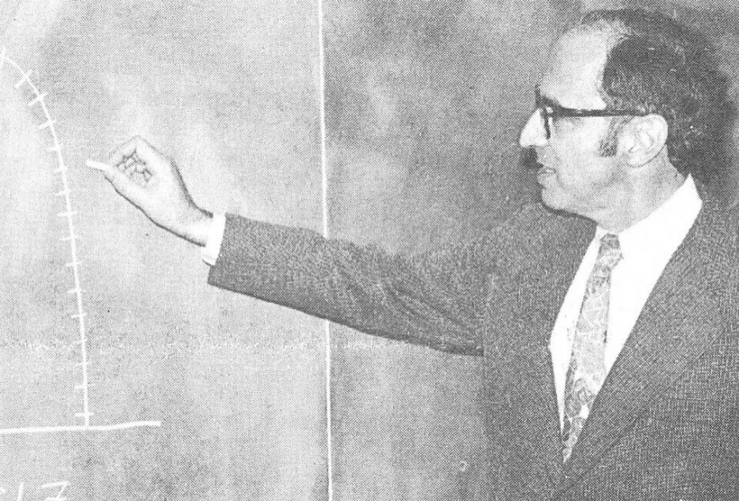
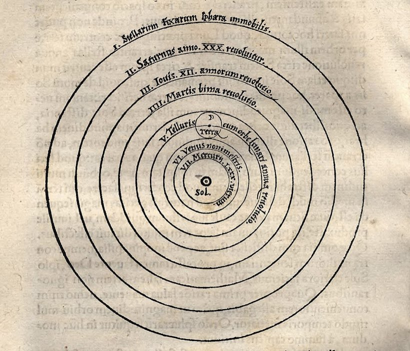
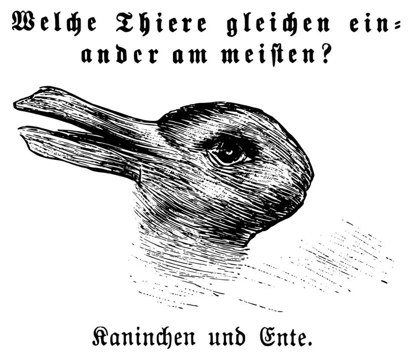

CH 2The Kuhnian Revolution
Why does a scientific community change its mind, if not because the evidence made it?
The book, and the joke about where it was published
Thomas Kuhn was an American physicist who moved into the history of science, and in 1962 he published The Structure of Scientific Revolutions. It is short, it is the most cited book of its century in the humanities and social sciences, and it put the word paradigm into ordinary English, where it is now used by people selling software.
Where it came out is the joke. It was published as a monograph inside the International Encyclopedia of Unified Science, which was the Vienna Circle's own publishing project. Chapter 9 of last week's packet is the Vienna Circle manifesto, arguing that science is one unified structure built up from verified observation statements. Kuhn's book, which says science does not build up and observation statements are not neutral, came out as a volume of their encyclopedia. The people who commissioned it published the thing that undid it.

What people took from it, and what he wrote
What the book was read as saying was that science is not rational. That a paradigm wins by fashion, politics or the deaths of the people who disagree, that one is as good as another, and that there is no such thing as getting closer to the truth. That reading is why "paradigm shift" now means any change of mind at all, and it is the reading Kuhn spent the rest of his life denying.
What he wrote is narrower. There are real reasons for preferring one theory to another, and he named five: accuracy, consistency, breadth, simplicity and fruitfulness. His claim is that those five do not settle it, because two people can weigh them differently and neither is being stupid. One prefers the theory that fits the measurements better, the other the theory that covers more ground, and there is no further rule that says which of them is right. So the choice is reasoned and underdetermined at the same time, which is a long way from irrational.
Progress he never denied. Later science solves more puzzles, more precisely, than earlier science. What he denied was the shape the textbooks give it.
The textbook shape is a wall. Each generation lays a course of bricks on the one below, nothing already laid is ever taken out, and the wall only gets higher. On that picture Newton is still standing inside Einstein, as the special case you get at low speeds.
Kuhn says bricks come out. Newtonian mass is a fixed quantity that a body simply has; relativistic mass changes with speed and converts into energy. They are not the same quantity with a correction term, so the sentence "mass is conserved" is not a true claim that Einstein kept and refined. It was thrown away and something else was put in its place that happens to give nearly the same numbers when things move slowly. Phlogiston went out of the wall entirely. Caloric, the weightless fluid heat was made of, went out. The crystal spheres carrying the planets went out. A wall that loses courses is not a wall being built up, and that is the whole of what "science does not accumulate" means.
Normal science: most scientists are not testing anything
Kuhn's first move is to describe what scientists actually do all day, which is not what the textbook picture says. The textbook picture is that a scientist proposes a bold conjecture and tries to refute it. Kuhn looked at the historical record and found that almost nobody does this almost ever.
What they do instead he calls normal science: solving puzzles inside a framework that is not itself in question. Measure this constant more precisely. Extend the theory to one more case. Build an instrument that gets at the quantity the theory says exists. The framework is the tool they work with.
Puzzle is his word and it is deliberate. A puzzle is something you already believe has a solution, and the interest is in whether you are clever enough to find it. A crossword has an answer. If you fail, the crossword is not discredited, you are. Normal science works the same way, and that is why a failed experiment is normally read as a failed experimenter.
In 2011 the OPERA experiment at Gran Sasso measured neutrinos arriving from CERN about sixty nanoseconds earlier than light would have. Faster than light is not a small anomaly; it contradicts special relativity. The team did not announce a revolution. They published the measurement and asked the community to find their mistake, and said so explicitly. Six months later the mistake was found: a fibre-optic cable was not fully screwed in, and a clock oscillator was running fast. The paradigm was never on trial. The cable was.
Paradigm, and why the word is slippery
Kuhn used paradigm in more senses than he meant to. A critic named Margaret Masterman went through the book and counted twenty-one distinct uses. Kuhn accepted the complaint and in a postscript split it in two, and those two are the ones to hold.
- The disciplinary matrix. Everything a scientific community shares: the equations it writes down, the models it pictures things with, the values it uses to judge a good theory, the list of problems it thinks are worth solving. Not a theory, a whole working culture.
- The exemplar. A concrete problem already solved, which students work through in training and then imitate for the rest of their careers. The inclined plane. The hydrogen atom. Kuhn said this was the sense he cared about most, and it is the one usually forgotten.
The exemplar sense is the interesting one, because it says a scientist is trained less by learning rules than by copying worked examples. Nobody can state the rules of their own field completely. What they have is a stock of cases and a feel for which new problem resembles which old one. That is a craft, and it is learned the way crafts are learned, which puts Kuhn unexpectedly close to the Greek technē in last week's Schadewaldt chapter.
Anomaly, crisis, revolution
Anomaly. A result the framework cannot digest. Most anomalies get absorbed, adjusted for, or put on a shelf marked "not yet", and there is a good reason for it: a framework that collapsed at the first awkward result would never get any work done.
Crisis. Anomalies accumulate at a point the community cares about, the fixes start looking like patches, and confidence goes. Kuhn's claim is that this is a state of the community. The same anomalies could have been known for decades and the crisis arrives when confidence does.
Revolution. A new framework takes over. Not by being added to the old one, but by replacing it, and Kuhn's strongest claim is that the new one does not contain the old as a special case in the way textbooks pretend.

Incommensurability, the claim that causes all the trouble
Incommensurable means there is no common measure. Kuhn borrowed it from geometry, where the side and the diagonal of a square cannot both be counted in whole units of the same ruler. Applied to paradigms it means you cannot settle the contest by totalling the evidence, because three things move at once.
- The words change meaning. Mass in Newton is conserved and independent of speed. Mass in Einstein is not. The same word, two different quantities, so a sentence with "mass" in it is not the same claim in both.
- The list of good questions changes. Asking why a body keeps moving is a serious question before Newton and a confused one after him.
- The standards change. What counts as a satisfying explanation is set by the paradigm, so each side scores itself well by its own rules.
Kuhn's own picture for it is the duck and the rabbit. One set of lines, two ways of seeing, and no third way of seeing it that is neutral between them. You can flip between them and you cannot hold both at once, and nothing in the drawing itself settles which one is correct. A scientist who moves to a new paradigm does not get a better view of the same thing; the thing looks different.

What Kuhn did not say, and spent thirty years insisting he had not said, is that theory choice is irrational or that anything goes. His position is that there are good reasons, that they are real, and that they do not add up to a proof, so two careful people can weigh them differently. He hated being called a relativist.
Joseph Priestley isolated oxygen in 1774 and called it dephlogisticated air. Phlogiston was the substance eighteenth-century chemistry thought fire was made of: everything burnable was held to contain it, burning was held to be the stuff escaping, and a candle was held to go out under a jar because the trapped air had taken up all the phlogiston it could hold. On that account Priestley had not found a new gas, he had found air with the phlogiston taken out, which is why he named it that. Lavoisier's account reversed the direction: burning is the thing taking oxygen up out of the air. Priestley went to his death in 1804 still holding the older view, having watched the entire field move without him. Alfred Wegener proposed continental drift in 1912 with the fit of the coastlines, matching fossils and matching rock beds, and was dismissed for half a century mostly because he had no mechanism. He died on the Greenland ice in 1930. Sea floor spreading arrived in the 1960s and plate tectonics became the framework of the whole science, thirty years too late for him to see it. Max Planck put the general rule bluntly: a new scientific truth does not win by convincing its opponents, it wins because the opponents eventually die and a new generation grows up with it.
Why the course sets this here
Kuhn moves the unit of analysis from the method to the community. Before him, the question was what rule separates science from everything else, which is the Vienna Circle question. After him, the question is what a trained group of people accepts, why they accept it, and what would make them stop. That is a question about people, and people can be studied by sociologists.
Which is exactly where the course goes next. Week 4 is the social construction of scientific knowledge, and the field that grew out of the door Kuhn opened is the one whose textbook this chapter comes from. Sismondo is writing an introduction to science and technology studies, and this chapter is the origin story of the discipline he is introducing.
- Answers
- The Vienna Circle, chapter 9 of the week 2 packet. They wanted one criterion that made a statement scientific. Kuhn says the criterion is whatever the current community was trained on.
- Answered by
- Week 4, the social construction of scientific knowledge, which takes Kuhn's community and studies it the way an anthropologist studies anything else.
- Sits beside
- Foucault, below. Kuhn says knowledge is made by a community; Foucault says the machinery for producing knowledge about people is the same machinery that controls them.
If you keep one thingScientists spend nearly all their time solving puzzles inside a framework they are not testing, and when the framework changes it gets replaced, because the two frameworks do not share a ruler to be measured against.
He got the idea while trying to understand why Aristotle looked stupid
Kuhn was a physics graduate student asked to teach a science course for humanities students, which meant reading Aristotle's physics. It looked like nonsense to him: bad mechanics, wrong in ways a first-year could see. Then, at his desk one summer day in 1947, it reorganised itself. Aristotle was not doing bad Newtonian mechanics, he was doing something else entirely, with a different question and a different notion of motion, and inside that scheme he was not stupid at all. Kuhn described it as a sudden change of shape, and the whole book comes out of that afternoon.
The word paradigm escaped and now sells software
Before 1962 the word meant a grammatical model, the table of endings you learn when you conjugate a verb. Kuhn's usage leaked into management, marketing and self-help, where a paradigm shift now means any change of mind at all. Kuhn lived to see this and was not pleased. He is one of a very small number of people who put a word into everyday English and then had to watch what happened to it.
The other Kuhn book is about the Copernican revolution
The Copernican Revolution came out in 1957, five years earlier, and it is the case study the famous book generalises from. The detail worth knowing: Copernicus did not make better predictions than Ptolemy. His system was about as accurate and about as complicated, still used circles, and still needed epicycles. It won on other grounds, and slowly. If you think revolutions happen because the new theory predicts better, this is the case that says they do not have to.
Popper and Kuhn argued in public, and the argument is still running
Karl Popper said science is what can be falsified: a real theory forbids something, and you go looking for the thing it forbids. Kuhn said that describes almost nothing anyone actually does, because a working scientist who gets a contrary result assumes their apparatus is wrong. They met at a colloquium in London in 1965, and the volume that came out of it, Criticism and the Growth of Knowledge, is one of the standard fights in the field. Imre Lakatos spent the rest of his career trying to build something that kept Popper's standards and Kuhn's history at the same time.
There is a book called The Poker, and it is about a different fight
A different fight, with the same cast. In 1946 Popper gave a talk at Cambridge and Wittgenstein, who was chairing, picked up a fireplace poker. The two men argued, the poker was waved, and Wittgenstein walked out. Everyone present remembered it differently and nobody agrees on what was said. Two journalists wrote a whole book, Wittgenstein's Poker, about ten minutes in a room. Philosophy of science has better anecdotes than it is given credit for.